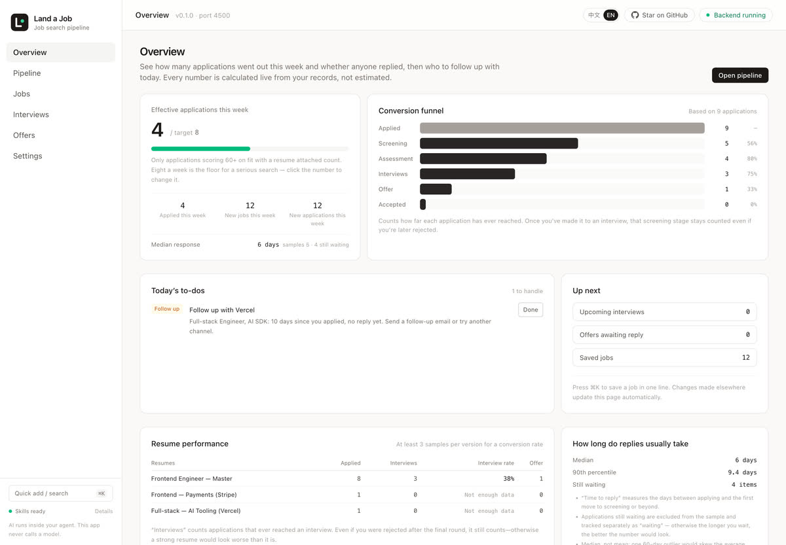
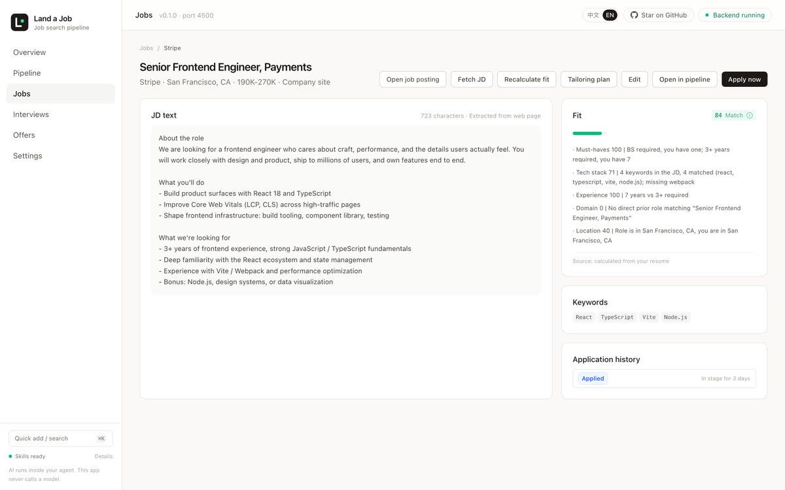
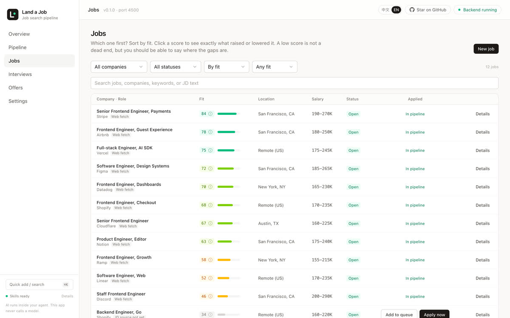
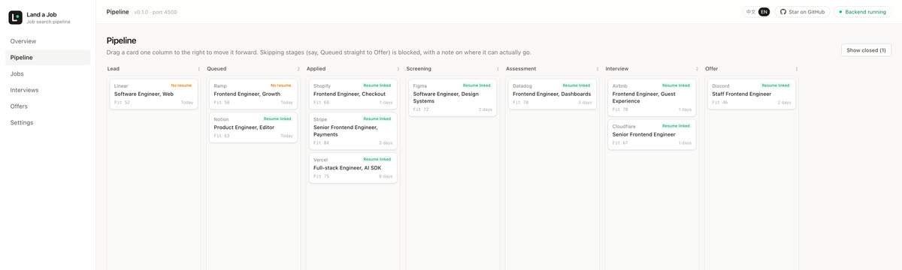

Requirements
| Node.js | ≥ 22 (pinned in engines) |
|---|---|
| npm | ≥ 10, npm workspaces only |
| OS | macOS / Linux; Windows via WSL |
| Chrome | Optional — only PDF export and browser-assisted applying need it |
| Agent | Optional but recommended; the Web UI works without one |
Local-first · Agent-native · Zero API keys
Seven stages from target company to offer, each with its own conversion rate: how many you apply to → how many resumes land → how many interviews you pass → how many offers you get. Land a Job puts them in one local database for the first time, and leaves the AI to your agent.
# 1 · get the code
git clone https://github.com/Dada-liu/land-a-job.git
# 2 · install and build
npm install && npm run build
# 3 · start the server (127.0.0.1:4399)
npm start
# 4 · link the skills into your agent
npm run skills:installStep 5 is registering the MCP server inside your agent — too long for one line, so let it read the install guide itself.
Real screenshots of the local app running on seeded data — no account, no hosted demo, no mockups. The interface ships in both English and 中文; switch it from the control in the top-right corner.




Watch the 15-second tour (GIF) · Full-resolution screenshots on GitHub
Every stage has a matching page and skill. The agent thinks and writes; the app stores and computes.
Company library plus job library. Give it a link and it collects the JD; if it can't, fall back to pasting.
A rules-based first pass with every factor laid out: what earned points, what's missing.
Reordered and reworded for this JD, with a field-by-field diff against the master version.
A form pre-filled in a dialog — the final click is always yours.
No reply in 7 days, no debrief in 3 — both turn into today's to-dos automatically.
Calendar scheduling, a question bank, and feedback the same day.
Four-year package, after tax, options discounted — two offers side by side.
You don't need to memorize commands. Copy the text below into Claude Code / Codex / WorkBuddy / Doubao Work / Cursor / Kimi. It will read an install guide written for agents, install and verify step by step, then tell you how to start.
Please install Land a Job for me — a local-first, agent-native job-search pipeline. The install guide is here:
https://dada-liu.github.io/land-a-job/agent-install.md
Read it and follow the steps in order: check Node ≥ 22 → clone the repo → npm install → npm run build →
start the server in the background → npm run skills:install → register land-a-job in my MCP config → call get_app_status to verify.
Requirements:
1. Before each step, tell me in one sentence what you are about to do.
2. Before changing my config files (MCP / shell rc), show me the diff first.
3. Let me confirm the install directory; on failure read the error before retrying, don't skip steps.
4. When done, report the verification result, the Web address, and where I should start.If your agent can open web pages (WorkBuddy / Claude Code / Codex / Doubao Work), you can also just hand it the link to this page — every code block here is one-click copyable. Want to read it yourself first? Here is the full text your agent will read.
| Node.js | ≥ 22 (pinned in engines) |
|---|---|
| npm | ≥ 10, npm workspaces only |
| OS | macOS / Linux; Windows via WSL |
| Chrome | Optional — only PDF export and browser-assisted applying need it |
| Agent | Optional but recommended; the Web UI works without one |
Three commands to start the server, two more to hook up an agent. Swap in your own path.
npm install && npm run build && npm startnpm run skills:installclaude mcp add land-a-job -- node "$HOME/Tools/land-a-job/apps/mcp/dist/index.js"
MCP args must be an absolute path. Skills are installed as symlinks,
so repository updates need no reinstall — but restart the agent after changing them.
Writing goes to the agent, reading and editing happen on the Web. Both sides share one dataset and refresh each other.
Once the skills are installed you never memorize tool names — just say it. Everything is persisted; if it only exists in the chat, it's gone when the window closes.
| You say | Skill used | Where it lands |
|---|---|---|
| Add this job, here's the link… | jd-collect | Job + JD body + keywords + fit score |
| Who should I apply to this week? | job-hunt | A list ordered by fit and priority |
| Tailor a resume for this JD | resume-tailor | A resume version specific to this role |
| I interview there tomorrow, help me prep | job-prep | Questions, answers, three-axis scoring, debrief |
| Which of these two offers, and how do I negotiate? | offer-decide | Package comparison, negotiation material, decision notes |
| Search Hangzhou for me, find 10 companies | job-search-batch | Companies + jobs + collected JDs |
Three more skills handle the repetitive work: resume-tailor-batch tailors in bulk into the queue,
browser-apply pre-fills company forms in your own browser, and
application-status-sync polls application status on a schedule.
Works with the terminal closed. No generation here — only viewing, editing, dragging and reviewing.
| Page | What you can do |
|---|---|
| Overview | This week's qualified applications, the funnel, the four kinds of follow-ups due today |
| Application board | Drag cards to advance status; illegal jumps are blocked and the allowed targets listed |
| Jobs · detail | Create jobs, collect or paste JDs, inspect fit factors, generate a tailoring plan |
| Companies | Target companies, priority, website and apply entry point |
| Resumes · editor | Three templates, A4 preview, autosave, PDF export |
| Interviews · question bank | Calendar scheduling, debriefs, four-way filtering, three-axis radar |
| Offer comparison | Four-year package, after tax, weight sliders that re-rank instantly |
| Data and agent connection | Take a snapshot, export the whole database, check skill install status |
Shortcuts: ⌘K one-line entry (e.g. "Meituan backend 30-50k https://…" creates the company and job and collects the JD), and two-key sequences starting with g jump to each page.
After the agent writes over MCP, the server broadcasts an invalidation over WebSocket — the page you have open turns into the new numbers without a refresh.
You dragged a card on the board or edited a resume in the editor; the next read by the agent sees the new state. There is no second cache.
The app never quietly calls a model: when generation is needed it gives you an instruction with the context already attached — paste it into your agent and it runs. Or skip the AI and edit it yourself.
These aren't for a prettier architecture diagram — they're why you can put your real resume and salary in here.
The app has no openai, no API keys, no generate_* tools.
Generation comes from the skills you installed, running in your own agent on your own quota.
Both the browser and MCP are thin shells; the only thing that writes to the database is the local Fastify process. Status changes go through the state machine and AI output is persisted only with provenance — that's why the numbers agree.
One SQLite file (data/land.db), no accounts, no cloud sync, no analytics.
Backup means taking a snapshot; migration means exporting JSON and copying the directory.
For the design trade-offs (why single-user, why the state machine is the only referee, why fit only sorts and never concludes), the repository's ARCHITECTURE.md writes down every decision and what it costs.
No. The Web UI can create jobs, record applications, write the question bank, edit resumes and compare offers — it just can't write for you. Collecting JDs, tailoring resumes, generating questions and negotiation prep need an agent.
No. Everything is written to the local data/land.db, and the server binds 127.0.0.1 only. The only outbound requests are collecting public JDs and whatever you trigger inside your own agent.
Run it in WSL and avoid spaces in the path. The always-on script only ships a macOS launchd variant; on other systems use npm start or your own process supervisor.
Run npm run skills:install in the repository, then restart the agent. Skills are symlinks, so repository updates apply automatically, but an agent only loads them once at startup.
Export the whole database as JSON from the settings page, then copy the entire data/ directory over. No cloud sync and no conflict merging — single user, single machine is a deliberate choice.
Platform sites (BOSS, Lagou, Liepin and friends) have anti-bot protection and the server doesn't fight them: on failure it asks you to paste the body, or to use the same role's link on the company's own site. The browser fallback is the agent's job, and its output must also be persisted.